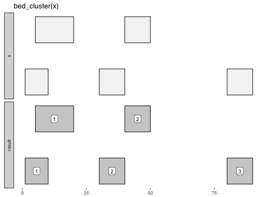

Returned data_frame contains a new .id column that can be used for
grouping along with chrom. Default max_dist of 0 means that
overlapping and book-ended intervals will be clustered.
bed_cluster(x, max_dist = 0, strand = FALSE)
data_frame
http://bedtools.readthedocs.org/en/latest/content/tools/cluster.html
Other single-set-ops: bed_complement,
bed_flank, bed_merge,
bed_random, bed_shift,
bed_shuffle, bed_slop
x <- tibble::tribble( ~chrom, ~start, ~end, "chr1", 100, 200, "chr1", 180, 250, "chr1", 250, 500, "chr1", 501, 1000 ) bed_cluster(x)#> # A tibble: 4 × 4 #> chrom start end .id #> <chr> <dbl> <dbl> <int> #> 1 chr1 100 200 1 #> 2 chr1 180 250 1 #> 3 chr1 250 500 1 #> 4 chr1 501 1000 2 #># glyph x <- tibble::tribble( ~chrom, ~start, ~end, 'chr1', 1, 10, 'chr1', 15, 20, 'chr1', 25, 35, 'chr1', 100, 120 ) bed_glyph(bed_cluster(x), label = '.id')